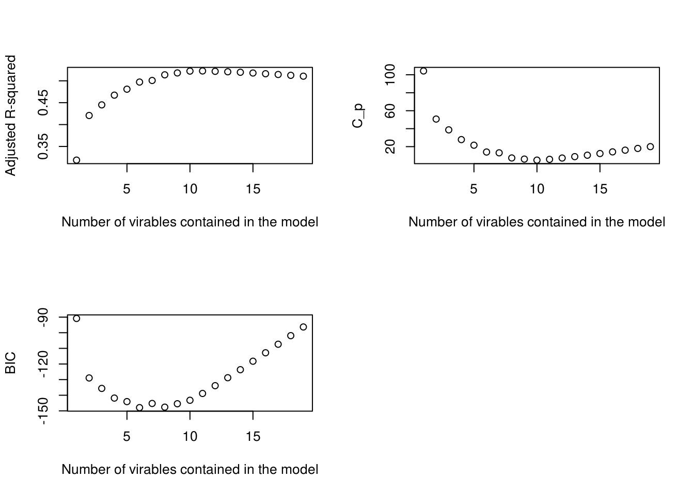
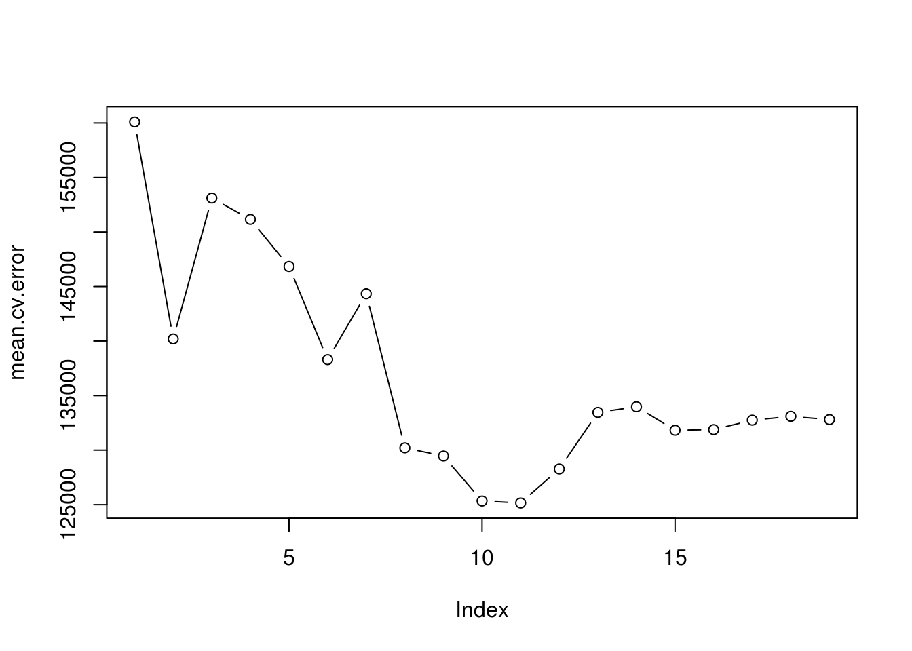

4 Advanced techniques for linear algorithms
4.1 Introduction
In this chapter we will look into some more advanced ways of measuring the performance of our models as well improving it.
Up to now we have been relating performance with how well our algorithm describes the variation in our training data (remember how we defined R-squared).There is a major issue with this, the more predictors we add the more our model will become ‘better’ according to this definition. Remember we are only using a SAMPLE of TRAINING data, both for designing the model and for measuring its performance. This sample of training data will contain some noise (some randomness), and when we add a new predictor, even if its completely irrelevant, a weak relationship (either positive or negative) will be found between that predictor and this randomness. The more of those irrelevant predictors we add, incrementally, we will start to describe this random variation better (in reality you can imagine this as shear luck). However this randomness is ONLY relevant to the sample data set that we happened to have, if we select another sample from the population we would have a different noise and all those predictors that we though are adding value to our model would only be causing issues. In this chapter we will look into how we can mitigate this issue and optimise our models as well us measure their performance more accurately. In this chapter we will look at doing so, while still building a linear-based model, you could also mitigate this by using algorithms that are non-linear such as tree based ones.
4.1.1 Bias Variance Trade Off
The issue above is part off a major concern in machine learning, described as the the bias variance trade off. Where bias describes how well a model fits in the training data, and variance how well it fits to the future/test data. In most cases there is a point where optimising the model for the training data will start to cause over-fitting. In other words, it will make the model very specific to that training sample and not generalised enough to fit future samples.
In this chapter We will also look into alternatives to using the least square technique, in order to fit our line better, as well as other approaches to fitting linear-based models on non-linear problems. The reason we really want to dive deep and try to optimise a linear model in that extend, instead of just using a non-linear one is because of its interpretability. Linear models, in real-life scenarios are superior in solving interference problems (finding relationships between predictors and reaction).
4.2 Improved performance indicators (adjusted R-squared and alternatives)
As we mentioned before the R-squared, for measuring the performance of our linear model will continuously increase with the addition of relevant or irrelevant predictors, resulting in overestimation of the models’ fitness. A very simple but popular approach in mitigating this, is the use of the adjusted R-squared instead, which adds a penalty for increased predictors in the formula. If we recall the formula for R-squared is \(R^2 = 1- \frac{sum squared error}{total variation}\). For the adjusted R-squared we want this to be decreasing as the number of predictors are increasing. It is given by \(R^2 = 1- \frac{\text{sum squared error/(n-d-1)}}{\text{total variation/(n-1)}}\), where n is the total number of samples and d is the degrees of freedom (total number of predictors -1).
Why are we accounting for the number of samples? A simple explanation is that the more samples we have, the more confident we can be that the accuracy we measured on this bigger sample will be the closer for the total population. As the number of samples (\(n\)) increases , we can see that the adjusted R-squared also increases, as we would expect from our intuition.This increase however, is relevant to how many predictors we have (since the nominator is divided by \(n-d-1\)). For example, if we take the case where d>n (we have more predictors than samples) the R-squared will decrease. Lets see more about the relationship between predictors and samples.
4.2.1 The curse of dimensionality
This relationship between number of predictors and samples, is actually very crucial in measuring the performance of a linear model. Remember that each predictor is a dimension in the space which our samples are placed. The more dimensions that space has (the more predictors), the more our points will be spread out. If we were comparing the accuracy of two models with the same number of samples, but different number of predictors, the model for which we could be more confident on its accuracy, would be the one with the least number of predictors!
For the extreme case where the number of predictors are equal or less than the number of samples, the linear model is useless, as it would result in extremely overconfident results. Let’s see an example. Let’s imagine with have two predictors (this means we have a 2 dimensional space drawn in the x and a y axis).
We have an equal amount of samples (2 points) from which we will create our linear model, using the least squares fit. To draw a straight line on the x and y axis we only need 2 points anyway, so our line fits perfectly the training data, we have 0 sum of squared error and therefore our classic R-squared is 1. Now we add another 100 samples from the same population on that plot and we see that the sum of squared error for those new points to the previously perfectly fit line is massive!
The problems caused by high dimensions is referred to us the curse of dimensionality. A high dimensional problem is usually one where number of predictors is close to or less than the number of samples. In order to perform linear regression on such problems we usually result in techniques for reducing the number of dimensions. We will look into those techniques later on. For now we need to understand how the adjusted R-squared attempts to be a better measurement for model fitness, by accounting for this relationship between number of predictors and number of samples used.
The adjusted R-squared is given by R automatically when we request the summary statistics for our model, and you have probably already noticed it.
library(MASS)
library(ISLR)
# Let's use our previous linear model of house values as a function of the
# Boston dataset attributes
lm.rm_fit <- lm(medv~., data = Boston)
# We can see that the R-squared and the adjusted R-squared are not too far off.
# The adjusted number is less, as expected it has paid the price of using
# multiple predictors, but we have enough samples to support most predictors.
# If we started removing predictors of less significance, we would notice that
# the adjusted R-squared and R-squared would be closer to each other.
summary(lm.rm_fit)##
## Call:
## lm(formula = medv ~ ., data = Boston)
##
## Residuals:
## Min 1Q Median 3Q Max
## -15.595 -2.730 -0.518 1.777 26.199
##
## Coefficients:
## Estimate Std. Error t value Pr(>|t|)
## (Intercept) 3.646e+01 5.103e+00 7.144 3.28e-12 ***
## crim -1.080e-01 3.286e-02 -3.287 0.001087 **
## zn 4.642e-02 1.373e-02 3.382 0.000778 ***
## indus 2.056e-02 6.150e-02 0.334 0.738288
## chas 2.687e+00 8.616e-01 3.118 0.001925 **
## nox -1.777e+01 3.820e+00 -4.651 4.25e-06 ***
## rm 3.810e+00 4.179e-01 9.116 < 2e-16 ***
## age 6.922e-04 1.321e-02 0.052 0.958229
## dis -1.476e+00 1.995e-01 -7.398 6.01e-13 ***
## rad 3.060e-01 6.635e-02 4.613 5.07e-06 ***
## tax -1.233e-02 3.760e-03 -3.280 0.001112 **
## ptratio -9.527e-01 1.308e-01 -7.283 1.31e-12 ***
## black 9.312e-03 2.686e-03 3.467 0.000573 ***
## lstat -5.248e-01 5.072e-02 -10.347 < 2e-16 ***
## ---
## Signif. codes: 0 '***' 0.001 '**' 0.01 '*' 0.05 '.' 0.1 ' ' 1
##
## Residual standard error: 4.745 on 492 degrees of freedom
## Multiple R-squared: 0.7406, Adjusted R-squared: 0.7338
## F-statistic: 108.1 on 13 and 492 DF, p-value: < 2.2e-164.2.2 Alternatives
Although the motivation behind the adjusted R-squared is logical and it is a very popular approach, it can not really be supported by any statistical theory. This why there are other alternatives available such as:
- Mallows’ \(C_p\), computed by:
\(C_p = \frac{1}{n} (\text{sum of squared error}+ 2d \sigma^2)\), where \(d\) is the degrees of freedom and \(\sigma^2\) is the approximated, using the training sample, population variance.
A high \(C_p\) measure means that the model is not a good fit. This approach tries to account for bias (over-fitting due to additional irrelevant predictors) by looking at how spread out the data is within those predictors (remember each predictor can be seen as a dimension). It uses the measure of uneducable error \(\epsilon\) as a penalty, \(\epsilon = 2d \sigma^2\).
Again the more the predictors increase (\(d\) will increase) the higher the penalty will be. As for the \(\sigma^2\) we can think of it as a regulator for that penalty. \(\sigma^2\) measures how spread out the data is, it makes sense that the more variation there is, the more spread out the data will be and the more the error will increase. While when \(n\) increases \(C_p\) decreases, indicating better performance when more samples are available.
Since \(\sigma^2\) is estimated using the sample’s \(\sigma^2\), this criterium requires enough data to get a good approximation and it will not perform well using small datasets. Furthermore, we have mentioned that the \(\epsilon\) is underestimated when there are complications in the relationship of the predictors and the reaction ( e.g. multicollinearity), in such cases \(C_p\) will also not provide useful insight.
- Akaike information criterion (AIC), computed by: \(AIC = 2k - 2ln(L)\), where k is the number of predictor plus one, and L is the maximum value of the likelihood function for the model.
Again a small AIC, like a small \(C_p\) indicated a good fit.
As we know the maximum likelihood function is a way to find optimum fit. The higher that number is the more fit our model will be, resulting in a smaller AIC. However we still have a penalty related to how many predictors are used, this is the role of \(2k\) in the equation.We will not go into too much details, but it has been found that AIC has an overall good performance in any model and data available, and quite often outperforms other methods when used for choosing predictors and finding the best model.
- Bayesian information criterion (BIC), computed by: \(BIC = ln(n)k - 2ln(L)\)
This is very similar to AIC, with the main deference been that a heavier penalty is given for models with increasing predictors, resulting in defining optimal models those with less predictors.
4.3 Cross Validation
We now have a way to account for over-fitting, when accessing our model. However, we are still only assessing our model on how well it is performing on the same data that it was trained with. We do not have any way of assessing how it would do when new data comes in.
You may think that this is a simple thing to do, we can split our data (like we did with confusion matrix) in a training sample (70-80%), used to train the model and a (20-30%) testing data, only used to test that trained model. We then just need to calculate the R-squared, adjusted R-squared, \(C_p\) or any other chosen criterion on the trained model, for that testing data (this method is called validation). We now have a performance measurement for a testing data!
Yes but if we split the data, how do we split it. Any random 70-80% sample will result in different estimates for our coefficients, since it will randomly contain different values for each predictors/reaction. Similarly any random 20-30% sample will result in varying measurements for our performance criteria. Those variations can be quite significant, especially when we do not have enough samples.
If we want more accuracy we need to take more measurements. This is where a new method of assessment comes in, Cross-Validation. Instead of splitting the data in two blocks, we will split it in \(k\) number of blocks containing an equal portion of the data. For each of those blocks we will:
- Use all the remaining data (not contained in that block) to train the model
- Use the data contained in that block to test the trained model. We calculate the chosen performance indicator ( e.g. sum of squared error (residuals)) for the test data (found in the block).
We will repeat that for all the \(k\) blocks. We then take the average performance indicator from all the \(k\) indicators. This is our CV value.
We can choose whatever value for k we want, to perform what is called k-fold cross validation. It is usually advised to choose 5-fold or 10-fold depending on how much data and resources are available.
Apart from assisting in choosing the optimum coefficients for linear models, cross validation is also a great to way to compare the performance of different machine learning algorithms. We can perform cross validation in any model, in a similar manner to what was previously described. It also has other applications, which we will look at later on.
I would recommend cross validation when you need to compare the performance of different machine learning algorithms on the same problem, when you do not have a lot of samples to simply trust the other methods, if computational power and complexity are not an issue, or if performance is crucial for your model.
4.3.1 Cross Validation in action
For this example, which is also given by the book, we will use another dataset made by ISLR, the Auto dataset. The dataset consists of various car’s consumption of fuel per mile and a few features that could be related with this, such as their weight, horsepower and number of cylinder’s. We will try an analyse this relationship using a linear model (We will only use horsepower to keep things simple and to the point). We will use k-fold validation to assess our model’s performance. In particular we will look at two cases for CV:
LOOCV (Leave One Out Cross Validation), which is just an extreme case of normal CV where the number of block (k) selected are equal to the number of samples available. In other words each time our model will be trained using all the samples apart from one, that one will be used to asses it. This is a clearly computational expensive method, but might be useful if we have very few samples to train our model with.
10-k fold validation, where k = 10
# This library has functions that will allow us to perform k-fold validation
install.packages('boot')library(boot)# Setting the seed to the same number will reproduce 'randomness'.
# We need randomness in splitting the data to our blocks for k-fold cross
# validation.
set.seed(24)
# gml() function without additional parameter will produce a linear model the
# same way lm() would.
# gml() however works with the k-fold function we need to use later.
glm.fit <- glm(mpg~horsepower, data = Auto)
# Perform cv using the cv.gml function, if you don't specify how many blocks you
# want to split your data to, the function performs LOOCV by default.
cv <- cv.glm(Auto, glm.fit)
# The delta is parameter from above that contains the average error calculated
# after performing CV for each sample.
cv$delta[1]## [1] 24.23151# On its own an error does really show us something, it is valuable when we
# compare it with errors from other models so that we can see which model is
# doing better.
# To illustrate this, we will try and compare the errors given when we perform
# polynomial regression. Using a for() loop we will perform CV on mpg as a
# function of:
# horsepower, horsepower^2, horsepower^3, horsepower^4, horsepower^5.
# Initialise a vector of 5 elements that will contain the errors for each model
cv.error = c(1, 2, 3, 4, 5)
# Loop 5 times, each time for every model and add the error calculated to
# cv.error
for (i in 1:5){
glm.fit = glm(mpg~poly(horsepower, i), data = Auto)
cv.error[i] = cv.glm(Auto, glm.fit)$delta[1]
}
# If we print out the errors we can see a significant improvement from the
# linear to the quadratic model (horsepower^2)
cv.error## [1] 24.23151 19.24821 19.33498 19.42443 19.03321# Now we will repeat the evaluation of the same models, but using a 10-k fold CV
cv.error = c(1, 2, 3, 4, 5)
for (i in 1:5){
glm.fit = glm(mpg~poly(horsepower, i), data = Auto)
# The only additional parameter is K, which we chose to set to 10 since we are
# looking to perform a 10-k fold cv.
cv.error[i] = cv.glm(Auto, glm.fit, K = 10)$delta[1]
}
# We can see that the results are quite similar (also the 10-k fold completed a
# lot faster, this is important especially if we had more data)
cv.error## [1] 24.26469 19.35152 19.47426 19.42381 19.156674.4 Selecting the optimal predictors for the model
We have seen how to measure the model’s fitness and account for over-fitting (using any or combinations of the methods we have been discussing), so we can compare various models with different sets of predictors and see which ones are more effective. In this section we will present various automated approaches for performing feature selection, in order to uncover which set of predictors will yield the optimal result.
As we know, we want our model to have the lowest possible test error (which we can measure with cross validation) as well as a good balance between under-fitting and over-fitting (which we can measure using criterion such as AIC or BIC). So one could produce various models for his problem, using a deferent subset of the predictors each time. He could them cross validate each or measure their AIC and choose the one with the smallest error. A more methodical way of doing so is the best subset selection approach.
4.4.1 Best subset selection
In this approach we will fit a models for every single possible combination of predictors, measure their performance and choose the optimal one. We will do so in a more organised and efficient way, while choosing the right performance criteria in each step of the selection process.
Steps:
First we define the ‘null Model’, this is a model of 0 predictors \(M_0\), that simply uses the total average of the reaction to give a prediction (this is necessary since all of the predictors could be irreverent, it acts as a measurement of comparison)
Then we take every singe predictor and make a model containing only that predictor and the reaction. We measure their performance using the R-squared. The best out of them is called the \(M_1\) model, since it only contains a single predictor.
Then we take every combination of 2 predictors and fit a model out of each pair, we measure all of their performance using the R-squared, the best out of them is called the \(M_2\) model.
Then we take every combination of 3 predictors and fit a model out of each 3 pairs, we measure all of their performance using the R-squared, the best out of them is called the \(M_3\) model.
We repeat until there are no more combinations possible, we have reached the total number of predictors, let’s call this the \(M_p\) model.
We then take all our best models for each combination \(M_0\), \(M_1\), \(M_2\), \(M_3\)…\(M_p\) and perform cross validation or measure their adjusted R-square, the AIC or BIC criterion (or a combination of those performance indicators). And of course, we choose the one with the least error.
install.packages("leaps")# leaps containS functions for subset selection
library(leaps)
# This lab, is again by ISLR, and uses the dataset Hitters. It contains various
# statistics for the performance of Baseball players such as number of Hits and
# Home runs, as well as their salary. We will try and fit a linear model that
# studies the relationship between their performance and salary.
library(ISLR)
# The salary field for some of the players is empty. We will remove those
# players from the dataset, as they are not valuable and will cause issues when
# attempting to make the model.
Hitters <- na.omit(Hitters)
# By default the regsubsets() selections looks up to pairs of 8, you can change
# this by adding the following parameter: nvmax = <number>
# We chose 19 since we have 19 predictors
regfit.full <- regsubsets(Salary~., Hitters, nvmax = 19 )
# The out put show with an asterix the predictors that yield the optimal model
# for each pair.
summary(regfit.full)## Subset selection object
## Call: regsubsets.formula(Salary ~ ., Hitters, nvmax = 19)
## 19 Variables (and intercept)
## Forced in Forced out
## AtBat FALSE FALSE
## Hits FALSE FALSE
## HmRun FALSE FALSE
## Runs FALSE FALSE
## RBI FALSE FALSE
## Walks FALSE FALSE
## Years FALSE FALSE
## CAtBat FALSE FALSE
## CHits FALSE FALSE
## CHmRun FALSE FALSE
## CRuns FALSE FALSE
## CRBI FALSE FALSE
## CWalks FALSE FALSE
## LeagueN FALSE FALSE
## DivisionW FALSE FALSE
## PutOuts FALSE FALSE
## Assists FALSE FALSE
## Errors FALSE FALSE
## NewLeagueN FALSE FALSE
## 1 subsets of each size up to 19
## Selection Algorithm: exhaustive
## AtBat Hits HmRun Runs RBI Walks Years CAtBat CHits CHmRun CRuns
## 1 ( 1 ) " " " " " " " " " " " " " " " " " " " " " "
## 2 ( 1 ) " " "*" " " " " " " " " " " " " " " " " " "
## 3 ( 1 ) " " "*" " " " " " " " " " " " " " " " " " "
## 4 ( 1 ) " " "*" " " " " " " " " " " " " " " " " " "
## 5 ( 1 ) "*" "*" " " " " " " " " " " " " " " " " " "
## 6 ( 1 ) "*" "*" " " " " " " "*" " " " " " " " " " "
## 7 ( 1 ) " " "*" " " " " " " "*" " " "*" "*" "*" " "
## 8 ( 1 ) "*" "*" " " " " " " "*" " " " " " " "*" "*"
## 9 ( 1 ) "*" "*" " " " " " " "*" " " "*" " " " " "*"
## 10 ( 1 ) "*" "*" " " " " " " "*" " " "*" " " " " "*"
## 11 ( 1 ) "*" "*" " " " " " " "*" " " "*" " " " " "*"
## 12 ( 1 ) "*" "*" " " "*" " " "*" " " "*" " " " " "*"
## 13 ( 1 ) "*" "*" " " "*" " " "*" " " "*" " " " " "*"
## 14 ( 1 ) "*" "*" "*" "*" " " "*" " " "*" " " " " "*"
## 15 ( 1 ) "*" "*" "*" "*" " " "*" " " "*" "*" " " "*"
## 16 ( 1 ) "*" "*" "*" "*" "*" "*" " " "*" "*" " " "*"
## 17 ( 1 ) "*" "*" "*" "*" "*" "*" " " "*" "*" " " "*"
## 18 ( 1 ) "*" "*" "*" "*" "*" "*" "*" "*" "*" " " "*"
## 19 ( 1 ) "*" "*" "*" "*" "*" "*" "*" "*" "*" "*" "*"
## CRBI CWalks LeagueN DivisionW PutOuts Assists Errors NewLeagueN
## 1 ( 1 ) "*" " " " " " " " " " " " " " "
## 2 ( 1 ) "*" " " " " " " " " " " " " " "
## 3 ( 1 ) "*" " " " " " " "*" " " " " " "
## 4 ( 1 ) "*" " " " " "*" "*" " " " " " "
## 5 ( 1 ) "*" " " " " "*" "*" " " " " " "
## 6 ( 1 ) "*" " " " " "*" "*" " " " " " "
## 7 ( 1 ) " " " " " " "*" "*" " " " " " "
## 8 ( 1 ) " " "*" " " "*" "*" " " " " " "
## 9 ( 1 ) "*" "*" " " "*" "*" " " " " " "
## 10 ( 1 ) "*" "*" " " "*" "*" "*" " " " "
## 11 ( 1 ) "*" "*" "*" "*" "*" "*" " " " "
## 12 ( 1 ) "*" "*" "*" "*" "*" "*" " " " "
## 13 ( 1 ) "*" "*" "*" "*" "*" "*" "*" " "
## 14 ( 1 ) "*" "*" "*" "*" "*" "*" "*" " "
## 15 ( 1 ) "*" "*" "*" "*" "*" "*" "*" " "
## 16 ( 1 ) "*" "*" "*" "*" "*" "*" "*" " "
## 17 ( 1 ) "*" "*" "*" "*" "*" "*" "*" "*"
## 18 ( 1 ) "*" "*" "*" "*" "*" "*" "*" "*"
## 19 ( 1 ) "*" "*" "*" "*" "*" "*" "*" "*"# You can view performance indicators for each model such as:
# adjusted R-squared
summary(regfit.full)$adjr2## [1] 0.3188503 0.4208024 0.4450753 0.4672734 0.4808971 0.4972001 0.5007849
## [8] 0.5137083 0.5180572 0.5222606 0.5225706 0.5217245 0.5206736 0.5195431
## [15] 0.5178661 0.5162219 0.5144464 0.5126097 0.5106270# The C_p value
summary(regfit.full)$cp## [1] 104.281319 50.723090 38.693127 27.856220 21.613011 14.023870
## [7] 13.128474 7.400719 6.158685 5.009317 5.874113 7.330766
## [13] 8.888112 10.481576 12.346193 14.187546 16.087831 18.011425
## [19] 20.000000# BIC criterion
summary(regfit.full)$bic## [1] -90.84637 -128.92622 -135.62693 -141.80892 -144.07143 -147.91690
## [7] -145.25594 -147.61525 -145.44316 -143.21651 -138.86077 -133.87283
## [13] -128.77759 -123.64420 -118.21832 -112.81768 -107.35339 -101.86391
## [19] -96.30412# Using that you can choose your optimal model.
# For example the model with highest adjuster R-squared
which.max(summary(regfit.full)$adjr2)## [1] 11# Or the model with lowest C_p
which.min(summary(regfit.full)$cp)## [1] 10# Or if we want to combine various criteria, it may be useful to visualise
par(mfrow = c(2, 2))
plot(summary(regfit.full)$adjr2,
xlab = "Number of virables contained in the model",
ylab="Adjusted R-squared")
plot(summary(regfit.full)$cp,
xlab = "Number of virables contained in the model",
ylab="C_p")
plot(summary(regfit.full)$bic,
xlab = "Number of virables contained in the model",
ylab="BIC")
# We can see that probably something close to 10 would be optimal, let's see the
# selected 10 variables and their coefficients.
coef(regfit.full, 10)## (Intercept) AtBat Hits Walks CAtBat
## 162.5354420 -2.1686501 6.9180175 5.7732246 -0.1300798
## CRuns CRBI CWalks DivisionW PutOuts
## 1.4082490 0.7743122 -0.8308264 -112.3800575 0.2973726
## Assists
## 0.2831680library(leaps)
# Please know the library for regsubsets did not have a build in function for
# predict, so we had to built one ourselves.
# Here is the code:
predict.regsubsets = function(object, newdata, id, ...) {
form = as.formula(object$call[[2]])
mat = model.matrix(form, newdata)
coefi = coef(object, id = id)
mat[, names(coefi)] %*% coefi
}
# Another way to select between the best models from each pair
# (m0, m1, m2...mp), instead of using criteria such as adjusted R-squared, would
# be cross validation. We will see how this could be done here. We choose to
# perform a 10-k fold cv.
# Let's set the seed again to ensure someone can repeat the test and get the
# same 'randomness'.
set.seed(1)
# To perform 10-k fold cross validation, we first need to split the data in 10
# folds (10 equal sized blocks).
k <- 10
# The way we split the data is we make a vector of size equal to nrow(Hitters)
# (the rows contained in the dataset Hitters), and each row will be assigned to
# a fold from 1 to 10 (sample 1:10). Since we want multiple rows to be part of
# the same folds we set replace = TRUE. Also because we haven't defined any
# particular split ration, by default the split will be equal across the folds.
folds <- sample(1:k, nrow(Hitters), replace = TRUE)
# We can see that each row of the Hitters dataset has been assigned to one of
# the 10 k folds, in an equal manner.
folds## [1] 3 4 6 10 3 9 10 7 7 1 3 2 7 4 8 5 8 10 4 8 10 3 7
## [24] 2 3 4 1 4 9 4 5 6 5 2 9 7 8 2 8 5 9 7 8 6 6 8
## [47] 1 5 8 7 5 9 5 3 1 1 4 6 7 5 10 3 5 4 7 3 5 8 1
## [70] 9 4 9 4 4 5 9 9 4 8 10 5 8 4 4 8 3 8 2 3 2 3 1
## [93] 7 9 8 8 5 5 9 7 7 4 3 10 7 3 2 5 10 6 10 8 4 5 2
## [116] 1 8 2 5 7 10 5 5 2 8 5 6 3 3 6 6 1 1 7 10 6 6 6
## [139] 10 6 7 7 3 3 8 5 2 8 2 9 7 6 4 5 6 2 6 1 3 3 3
## [162] 9 5 8 9 5 1 4 8 4 7 9 9 4 4 9 7 8 7 10 3 2 9 6
## [185] 9 2 8 8 10 6 8 4 2 10 3 6 2 9 4 8 3 3 6 3 2 6 6
## [208] 2 3 8 10 2 8 10 9 4 7 10 10 4 3 2 4 6 10 6 3 1 5 9
## [231] 4 2 4 7 4 7 7 6 5 5 4 6 10 2 5 3 5 2 5 10 8 10 5
## [254] 7 5 2 3 5 4 10 6 4 3# We also need a variable that will store all the calculated errors. In this
# case we will have 10 models (one for each fold) for every 19 different sets of
# variables (M0, M1, M2, ....M19 after performing best subset selection). If we
# want to be able to keep track of which model came from which fold and subset
# we need a matrix instead of a simple vector.
cv.errors <- matrix(NA, k, 19, dimnames = list(NULL, paste(1:19)))
# We will fill this with the actual errors later
cv.errors## 1 2 3 4 5 6 7 8 9 10 11 12 13 14 15 16 17 18 19
## [1,] NA NA NA NA NA NA NA NA NA NA NA NA NA NA NA NA NA NA NA
## [2,] NA NA NA NA NA NA NA NA NA NA NA NA NA NA NA NA NA NA NA
## [3,] NA NA NA NA NA NA NA NA NA NA NA NA NA NA NA NA NA NA NA
## [4,] NA NA NA NA NA NA NA NA NA NA NA NA NA NA NA NA NA NA NA
## [5,] NA NA NA NA NA NA NA NA NA NA NA NA NA NA NA NA NA NA NA
## [6,] NA NA NA NA NA NA NA NA NA NA NA NA NA NA NA NA NA NA NA
## [7,] NA NA NA NA NA NA NA NA NA NA NA NA NA NA NA NA NA NA NA
## [8,] NA NA NA NA NA NA NA NA NA NA NA NA NA NA NA NA NA NA NA
## [9,] NA NA NA NA NA NA NA NA NA NA NA NA NA NA NA NA NA NA NA
## [10,] NA NA NA NA NA NA NA NA NA NA NA NA NA NA NA NA NA NA NA# Now we need to create 10 models for each of the 19 subsets, using a different
# combination of 9 out of the 10 blocks each time (leaving one for testing). We
# will call the testing one j, in order to be able to distinguish it and only
# use it for testing. Let's see this in practice:
# For every j in k (we define j as a single fold. First it will be all the rows
# who where assigned with 1, then 2, 3 ...)
for (j in 1:k) {
# Create the 19 models using all the data apart from j (!=j)
best.fit <- regsubsets(Salary ~., data = Hitters[folds!=j,], nvmax = 19)
# Now all we have to do, is for each 10 sets of models with the same params
# calculate the average testing error.
for (i in 1:19) {
# First we need to find out the values for salary that each model would
# predict for our testing j fold.
pred = predict(best.fit, Hitters[folds == j, ], id = i)
# Then we measure the squared difference of the actual salary from the
# predicted for each point, and we store their mean in our matrix.
cv.errors[j, i] <- mean((Hitters$Salary[folds==j]-pred)^2)
}
}
# We can see the difference of the mean squared errors from the predicted to the
# actual points. That is for every of the 10 folds for each of 19 subsets used.
cv.errors## 1 2 3 4 5 6
## [1,] 187479.08 141652.61 163000.36 169584.40 141745.39 151086.36
## [2,] 96953.41 63783.33 85037.65 76643.17 64943.58 56414.96
## [3,] 165455.17 167628.28 166950.43 152446.17 156473.24 135551.12
## [4,] 124448.91 110672.67 107993.98 113989.64 108523.54 92925.54
## [5,] 136168.29 79595.09 86881.88 94404.06 89153.27 83111.09
## [6,] 171886.20 120892.96 120879.58 106957.31 100767.73 89494.38
## [7,] 56375.90 74835.19 72726.96 59493.96 64024.85 59914.20
## [8,] 93744.51 85579.47 98227.05 109847.35 100709.25 88934.97
## [9,] 421669.62 454728.90 437024.28 419721.20 427986.39 401473.33
## [10,] 146753.76 102599.22 192447.51 208506.12 214085.78 224120.38
## 7 8 9 10 11 12
## [1,] 193584.17 144806.44 159388.10 138585.25 140047.07 158928.92
## [2,] 63233.49 63054.88 60503.10 60213.51 58210.21 57939.91
## [3,] 137609.30 146028.36 131999.41 122733.87 127967.69 129804.19
## [4,] 104522.24 96227.18 93363.36 96084.53 99397.85 100151.19
## [5,] 86412.18 77319.95 80439.75 75912.55 81680.13 83861.19
## [6,] 94093.52 86104.48 84884.10 80575.26 80155.27 75768.73
## [7,] 62942.94 60371.85 61436.77 62082.63 66155.09 65960.47
## [8,] 90779.58 77151.69 75016.23 71782.40 76971.60 77696.55
## [9,] 396247.58 381851.15 369574.22 376137.45 373544.77 382668.48
## [10,] 214037.26 169160.95 177991.11 169239.17 147408.48 149955.85
## 13 14 15 16 17 18
## [1,] 161322.76 155152.28 153394.07 153336.85 153069.00 152838.76
## [2,] 59975.07 58629.57 58961.90 58757.55 58570.71 58890.03
## [3,] 133746.86 135748.87 137937.17 140321.51 141302.29 140985.80
## [4,] 103073.96 106622.46 106211.72 107797.54 106288.67 106913.18
## [5,] 85111.01 84901.63 82829.44 84923.57 83994.95 84184.48
## [6,] 76927.44 76529.74 78219.76 78256.23 77973.40 79151.81
## [7,] 66310.58 70079.10 69553.50 68242.10 68114.27 67961.32
## [8,] 78460.91 81107.16 82431.25 82213.66 81958.75 81893.97
## [9,] 375284.60 376527.06 374706.25 372917.91 371622.53 373745.20
## [10,] 194397.12 194448.21 174012.18 172060.78 184614.12 184397.75
## 19
## [1,] 153197.11
## [2,] 58949.25
## [3,] 140392.48
## [4,] 106919.66
## [5,] 84284.62
## [6,] 78988.92
## [7,] 67943.62
## [8,] 81848.89
## [9,] 372365.67
## [10,] 183156.97# We want to get one average value for each of 19 models so we can compare then
# and choose the optimal.
# The function apply will help us with that.
mean.cv.error <- apply(cv.errors, 2, mean)
mean.cv.error## 1 2 3 4 5 6 7 8
## 160093.5 140196.8 153117.0 151159.3 146841.3 138302.6 144346.2 130207.7
## 9 10 11 12 13 14 15 16
## 129459.6 125334.7 125153.8 128273.5 133461.0 133974.6 131825.7 131882.8
## 17 18 19
## 132750.9 133096.2 132804.7# Lets plot them to see which models have the lowest errors
par(mfrow = c(1, 1))
plot(mean.cv.error, type='b')
# We can see that 10 and 11 are the smallest ones ( with 11 been the smallest),
# which is quite close to what we got from using criteria like the adjusted
# R-squared.
# Note:
# An alternative to CV, that would be more computationally advantageous, is
# simple validation. We have mentioned that when introducing cross validation.
# Basically we only split the data in two, a training and testing data set. We
# create all our models until Mp (by best selection or other methods) using the
# training data. We then use the testing data to measure the sum of squared
# errors, or R-squared of that test data. We choose the one with the smallest
# test error. Of course this calculation would be highly dependant on how the
# data was split, and there is risk in not getting accurate measurements for the
# error.As you can see this is a very inclusive process, which is very useful when you have only a few predictors to choose from. It is not however, computationally light. For \(p\) number of predictors, we have \(p!\) possible combinations. So even if we have something like 10 features, we end up with having to train 3628800 models!This is why the following approach was developed.
4.4.2 Stepwise Selection
In this approach we either start from the null model and incrementally add predictors (forward), or start with all the predictors and incrementally reduce them (backward).The computational advantages from reducing the amount of models required comes from maintaining the previously selected best model, and only adding the most valuable predictor from the remaining ones, per iteration.
Forward Stepwise Selection
Again, we will define the ‘null Model’, this is a model of 0 predictors \(M_0\), that simply uses the total average of the reaction to give a prediction
And start with considering all models that use one single predictor. Measure their R-squared and choose the best one, this is the \(M_1\) (up to know its the same as above)
Now we will start, one by one adding more predictors to \(M_1\), each time measuring their performance and choosing to add the predictor that is adding the most value (increases the R-squared the most). First we create the \(M_2\) model, which has two predictors. The one predictor comes from \(M_1\) and the other will be selected form the remaining ones. To select that we need to add each remaining predictor to \(M_1\) and choose the one that yields the highest R-squared.
Similarly we create the \(M_3\) model. We keep the two predictors from \(M_2\) and select another one from the remaining, which will add the most value (as found from fitting a model for all the remaining predictors and measuring their R-squared)
We repeat until we have used all the predictors in the \(M_p\) model
Just like before, we will choose to cross validate \(M_0\), \(M_1\), \(M_2\), \(M_3\)…\(M_p\), or measure some other performance criteria that accounts for over-fitting (or take a combination). Then we can choose the optimal model.
forward <- regsubsets(Salary~., data = Hitters, nvmax = 19, method = "forward")
summary(forward)## Subset selection object
## Call: regsubsets.formula(Salary ~ ., data = Hitters, nvmax = 19, method = "forward")
## 19 Variables (and intercept)
## Forced in Forced out
## AtBat FALSE FALSE
## Hits FALSE FALSE
## HmRun FALSE FALSE
## Runs FALSE FALSE
## RBI FALSE FALSE
## Walks FALSE FALSE
## Years FALSE FALSE
## CAtBat FALSE FALSE
## CHits FALSE FALSE
## CHmRun FALSE FALSE
## CRuns FALSE FALSE
## CRBI FALSE FALSE
## CWalks FALSE FALSE
## LeagueN FALSE FALSE
## DivisionW FALSE FALSE
## PutOuts FALSE FALSE
## Assists FALSE FALSE
## Errors FALSE FALSE
## NewLeagueN FALSE FALSE
## 1 subsets of each size up to 19
## Selection Algorithm: forward
## AtBat Hits HmRun Runs RBI Walks Years CAtBat CHits CHmRun CRuns
## 1 ( 1 ) " " " " " " " " " " " " " " " " " " " " " "
## 2 ( 1 ) " " "*" " " " " " " " " " " " " " " " " " "
## 3 ( 1 ) " " "*" " " " " " " " " " " " " " " " " " "
## 4 ( 1 ) " " "*" " " " " " " " " " " " " " " " " " "
## 5 ( 1 ) "*" "*" " " " " " " " " " " " " " " " " " "
## 6 ( 1 ) "*" "*" " " " " " " "*" " " " " " " " " " "
## 7 ( 1 ) "*" "*" " " " " " " "*" " " " " " " " " " "
## 8 ( 1 ) "*" "*" " " " " " " "*" " " " " " " " " "*"
## 9 ( 1 ) "*" "*" " " " " " " "*" " " "*" " " " " "*"
## 10 ( 1 ) "*" "*" " " " " " " "*" " " "*" " " " " "*"
## 11 ( 1 ) "*" "*" " " " " " " "*" " " "*" " " " " "*"
## 12 ( 1 ) "*" "*" " " "*" " " "*" " " "*" " " " " "*"
## 13 ( 1 ) "*" "*" " " "*" " " "*" " " "*" " " " " "*"
## 14 ( 1 ) "*" "*" "*" "*" " " "*" " " "*" " " " " "*"
## 15 ( 1 ) "*" "*" "*" "*" " " "*" " " "*" "*" " " "*"
## 16 ( 1 ) "*" "*" "*" "*" "*" "*" " " "*" "*" " " "*"
## 17 ( 1 ) "*" "*" "*" "*" "*" "*" " " "*" "*" " " "*"
## 18 ( 1 ) "*" "*" "*" "*" "*" "*" "*" "*" "*" " " "*"
## 19 ( 1 ) "*" "*" "*" "*" "*" "*" "*" "*" "*" "*" "*"
## CRBI CWalks LeagueN DivisionW PutOuts Assists Errors NewLeagueN
## 1 ( 1 ) "*" " " " " " " " " " " " " " "
## 2 ( 1 ) "*" " " " " " " " " " " " " " "
## 3 ( 1 ) "*" " " " " " " "*" " " " " " "
## 4 ( 1 ) "*" " " " " "*" "*" " " " " " "
## 5 ( 1 ) "*" " " " " "*" "*" " " " " " "
## 6 ( 1 ) "*" " " " " "*" "*" " " " " " "
## 7 ( 1 ) "*" "*" " " "*" "*" " " " " " "
## 8 ( 1 ) "*" "*" " " "*" "*" " " " " " "
## 9 ( 1 ) "*" "*" " " "*" "*" " " " " " "
## 10 ( 1 ) "*" "*" " " "*" "*" "*" " " " "
## 11 ( 1 ) "*" "*" "*" "*" "*" "*" " " " "
## 12 ( 1 ) "*" "*" "*" "*" "*" "*" " " " "
## 13 ( 1 ) "*" "*" "*" "*" "*" "*" "*" " "
## 14 ( 1 ) "*" "*" "*" "*" "*" "*" "*" " "
## 15 ( 1 ) "*" "*" "*" "*" "*" "*" "*" " "
## 16 ( 1 ) "*" "*" "*" "*" "*" "*" "*" " "
## 17 ( 1 ) "*" "*" "*" "*" "*" "*" "*" "*"
## 18 ( 1 ) "*" "*" "*" "*" "*" "*" "*" "*"
## 19 ( 1 ) "*" "*" "*" "*" "*" "*" "*" "*"Backward Stepwise Selection
This time we start from the \(M_p\) model, which contains all the predictors
We remove one predictor from \(M_p\) and measure the R-squared. We do this for all the predictors in \(M_p\). Now we have measurements for all possible combinations with predictors p-1. We choose the one with the highest R-squared, this is the \(M_p-1\) model. Note that since we removed a predictor the R-squared of the new model will be smaller (we have explained that additional predictors will improve these measurement even if they are irrelevant). However, this does not mean it is not potentially a better model, when we compute its BIC, AIC or adjusted R-squared or if we choose to cross validate, the issues of over-fitting will taken into account.
We repeat the process until we reach \(M_0\), until all the predictors have been removed
Like always, we will choose to cross validate \(M_p\), \(M_p-1\), \(M_p-2\), \(M_p-3\)….\(M_0\), or measure some other performance criteria that accounts for over-fitting (or take a combination). Then we can choose the optimal model.
backward <- regsubsets(Salary~., data = Hitters, nvmax = 19, method = "backward")
summary(backward)## Subset selection object
## Call: regsubsets.formula(Salary ~ ., data = Hitters, nvmax = 19, method = "backward")
## 19 Variables (and intercept)
## Forced in Forced out
## AtBat FALSE FALSE
## Hits FALSE FALSE
## HmRun FALSE FALSE
## Runs FALSE FALSE
## RBI FALSE FALSE
## Walks FALSE FALSE
## Years FALSE FALSE
## CAtBat FALSE FALSE
## CHits FALSE FALSE
## CHmRun FALSE FALSE
## CRuns FALSE FALSE
## CRBI FALSE FALSE
## CWalks FALSE FALSE
## LeagueN FALSE FALSE
## DivisionW FALSE FALSE
## PutOuts FALSE FALSE
## Assists FALSE FALSE
## Errors FALSE FALSE
## NewLeagueN FALSE FALSE
## 1 subsets of each size up to 19
## Selection Algorithm: backward
## AtBat Hits HmRun Runs RBI Walks Years CAtBat CHits CHmRun CRuns
## 1 ( 1 ) " " " " " " " " " " " " " " " " " " " " "*"
## 2 ( 1 ) " " "*" " " " " " " " " " " " " " " " " "*"
## 3 ( 1 ) " " "*" " " " " " " " " " " " " " " " " "*"
## 4 ( 1 ) "*" "*" " " " " " " " " " " " " " " " " "*"
## 5 ( 1 ) "*" "*" " " " " " " "*" " " " " " " " " "*"
## 6 ( 1 ) "*" "*" " " " " " " "*" " " " " " " " " "*"
## 7 ( 1 ) "*" "*" " " " " " " "*" " " " " " " " " "*"
## 8 ( 1 ) "*" "*" " " " " " " "*" " " " " " " " " "*"
## 9 ( 1 ) "*" "*" " " " " " " "*" " " "*" " " " " "*"
## 10 ( 1 ) "*" "*" " " " " " " "*" " " "*" " " " " "*"
## 11 ( 1 ) "*" "*" " " " " " " "*" " " "*" " " " " "*"
## 12 ( 1 ) "*" "*" " " "*" " " "*" " " "*" " " " " "*"
## 13 ( 1 ) "*" "*" " " "*" " " "*" " " "*" " " " " "*"
## 14 ( 1 ) "*" "*" "*" "*" " " "*" " " "*" " " " " "*"
## 15 ( 1 ) "*" "*" "*" "*" " " "*" " " "*" "*" " " "*"
## 16 ( 1 ) "*" "*" "*" "*" "*" "*" " " "*" "*" " " "*"
## 17 ( 1 ) "*" "*" "*" "*" "*" "*" " " "*" "*" " " "*"
## 18 ( 1 ) "*" "*" "*" "*" "*" "*" "*" "*" "*" " " "*"
## 19 ( 1 ) "*" "*" "*" "*" "*" "*" "*" "*" "*" "*" "*"
## CRBI CWalks LeagueN DivisionW PutOuts Assists Errors NewLeagueN
## 1 ( 1 ) " " " " " " " " " " " " " " " "
## 2 ( 1 ) " " " " " " " " " " " " " " " "
## 3 ( 1 ) " " " " " " " " "*" " " " " " "
## 4 ( 1 ) " " " " " " " " "*" " " " " " "
## 5 ( 1 ) " " " " " " " " "*" " " " " " "
## 6 ( 1 ) " " " " " " "*" "*" " " " " " "
## 7 ( 1 ) " " "*" " " "*" "*" " " " " " "
## 8 ( 1 ) "*" "*" " " "*" "*" " " " " " "
## 9 ( 1 ) "*" "*" " " "*" "*" " " " " " "
## 10 ( 1 ) "*" "*" " " "*" "*" "*" " " " "
## 11 ( 1 ) "*" "*" "*" "*" "*" "*" " " " "
## 12 ( 1 ) "*" "*" "*" "*" "*" "*" " " " "
## 13 ( 1 ) "*" "*" "*" "*" "*" "*" "*" " "
## 14 ( 1 ) "*" "*" "*" "*" "*" "*" "*" " "
## 15 ( 1 ) "*" "*" "*" "*" "*" "*" "*" " "
## 16 ( 1 ) "*" "*" "*" "*" "*" "*" "*" " "
## 17 ( 1 ) "*" "*" "*" "*" "*" "*" "*" "*"
## 18 ( 1 ) "*" "*" "*" "*" "*" "*" "*" "*"
## 19 ( 1 ) "*" "*" "*" "*" "*" "*" "*" "*"Forward and Backward selection will require a lot less computational power for larger p. However, since they do not check all possible combinations there is a risk that the concluding model may be not the most optimal. When having to choose between forward and backward, you should consider how much data is available. If you do not have samples that are greater than your predictors, backwards propagation will not perform well. Since it starts with a model using all the predictors, a lot of issues with dimensionality will occur (as we previously discussed). You may also want to consider whether you think most of your predictors are valuable (i would go with backwards) or only some of them are (I would go with forward). You may be able to stop the selection if at some point you do not see improvements, in order to be more resource and time efficient.
If you want some middle ground between computational efficiency and getting closer to the optimal model, you can try a hybrid of forward and backward stepwise selection. In this case you would start in a similar manner to forward selection, however after adding a new predictor each iteration (or in some of the iterations) you could also check to see which predictor you could remove. By constantly adding and removing predictors you get to see more variations of the models. This would start approaching the best subset selection while at the same time keep the focus only on incremental changes that offer the most value.
4.5 Shrinkage/Regularisation methods
Such methods are used when we want to focus on reducing the variance of a linear mode (remember variance is associated with over-fitting, when our model has a lower training error but high testing error). Some reasons why you need to further reduce variance could be:
You have only a few training samples. As we discussed in ‘curse of dimensionality’ when we have only a few samples in relation to how much predictors we have, our models will tend to be overconfident and do well with training data but not testing data. Even in the case of having less samples than predictors, those methods will be able to provide a working model.
You are more interested in the predictive abilities of your model rather than its inference. In this case you are more interested on reducing the variance rather than the bias of the model. You want your model to do well on testing/new data.
Multicollinearity is present on your model. Correlation between predictors causes your model to take into account the same effects (from predictors) multiple times, as a result your model is overconfident. You will have increased measurement of training error, but again a significantly worse measurement for testing error.
Those methods are very similar to least squares, as we know it, however they will try to ‘shrink’ the estimates of the coefficients (move them more towards zero).
Why would that cause a reduction in variance? If we remember the linear equation \(y= b_0 + b_1x_1 + b_2x_2..\), where \(b_1\), \(b_2\) are our coefficients, the more they get closer to zero the more \(x_1\) and \(x_2\) will tend to zero. In other words the effect of the predictors \(x_1\) and \(x_2\) (as it is measured from the given test sample) will have less of an effect to \(y\) (the reaction). So if our current sample will have less of an effect in defining the line, then that line is more generalised and (since it is less determined by just one sample) potentially it will perform better on testing/new data.
There are a few ways to shrink (or as it also referred to as ‘regularise’) the coefficients, which we will be looking at in this chapter.
4.5.1 Ridge regression
As we know this methods are all close to linear regression. Ridge regression will indeed, try to minimise the function of the leat squared error. However, it also wants to minimise the coefficients for our predictors. So we will also add the coefficient estimations to that function as a penalty. The weight that this penalty will have is going to be specific to the particular problem, but is generally represented as \(\lambda\).
In other words least regression attempts to minimise:
\(\sum RSS +\lambda (b_1^2 + b_2^2 + ...)\)
To calculate the \(\lambda\) we use cross validation, we simply try out different values for it, and pick the one that yields the model with the least error. Generally, the closer the \(\lambda\) is to zero, the less of an affect the penalty will have (e.g. if it is zero we are basically just minimising the least squares), while the grater it is the more the coefficients will tend to zero.
# This library has the function glmnet, which allows us to perform ridge
# regression and other such methods
install.packages("glmnet")library(glmnet)## Loading required package: Matrix## Loading required package: foreach## Loaded glmnet 2.0-16# For our ridge regression we will need to choose some values for lambda, in
# order to compare the models they yield and find out the optimal value for
# lambda.
# A standard inclusive set, that we will use, is from 10^-2 until 10^10
grid <- 10^seq(10, -2, length = 100)
# This function requires the parameter given a bit deferent that the usual y~.
# For the predictors it wants them as a matrix, model.matrix() turns then in the
# required format and also deals with quantitative features.
x <- model.matrix(Salary~.,Hitters)[,-1]
# The reaction needs to also be clearly defined
y <- Hitters$Salary
# Now that we have everything we can perform ridge regression:
# alpha means we want to perform ridge regression (glmnet also perform other
# methods)
ridge.model <- glmnet(x, y, alpha = 0, lambda = grid)
# We can see the coefficients of a model with certain lambda using the
# following:
# This returns the coefficients with lambda = 50 (the intercept and the
# following 19 coefficients)
coef(ridge.model)[, 50]## (Intercept) AtBat Hits HmRun Runs
## 407.356050200 0.036957182 0.138180344 0.524629976 0.230701523
## RBI Walks Years CAtBat CHits
## 0.239841459 0.289618741 1.107702929 0.003131815 0.011653637
## CHmRun CRuns CRBI CWalks LeagueN
## 0.087545670 0.023379882 0.024138320 0.025015421 0.085028114
## DivisionW PutOuts Assists Errors NewLeagueN
## -6.215440973 0.016482577 0.002612988 -0.020502690 0.301433531# Or using the predict() function
predict(ridge.model, s = 50, type="coefficients")[1:20]## [1] 4.876610e+01 -3.580999e-01 1.969359e+00 -1.278248e+00 1.145892e+00
## [6] 8.038292e-01 2.716186e+00 -6.218319e+00 5.447837e-03 1.064895e-01
## [11] 6.244860e-01 2.214985e-01 2.186914e-01 -1.500245e-01 4.592589e+01
## [16] -1.182011e+02 2.502322e-01 1.215665e-01 -3.278600e+00 -9.496680e+00# In order to choose which lambda to use, we need to follow a similar procedure
# to what we have done previously. We would split our data in two sets, training
# and testing. We would use the training to create our models and the test to
# measure their testing mean squared error. We would then pick the one with the
# least error. Or we could manually try out different lambdas and see at which
# lambda we are getting best results. We should also compare our results to
# linear regression where lambda simple equals zero. Let's see an example:
set.seed(1)
# Remember x is a matrix of all rows containing values of the predictors, we
# split their indexes in 80%-20% for training and testing.
train <- sample(1:nrow(x), nrow(x)*0.8)
train## [1] 70 98 150 237 53 232 243 170 161 16 259 45 173 97 192 124 178
## [18] 245 94 190 228 52 158 31 64 92 4 91 205 80 113 140 115 43
## [35] 244 153 181 25 163 93 184 144 174 122 117 251 6 104 241 149 102
## [52] 183 224 242 15 21 66 107 136 83 186 60 211 67 130 210 95 151
## [69] 17 256 207 162 200 239 236 168 249 73 222 177 234 199 203 59 235
## [86] 37 126 22 230 226 42 11 110 214 132 134 77 69 188 100 206 58
## [103] 44 159 101 34 208 75 185 201 261 112 54 65 23 2 106 254 257
## [120] 154 142 71 166 221 105 63 143 29 240 212 167 172 5 84 120 133
## [137] 72 191 248 138 182 74 179 135 87 196 157 119 13 99 263 125 247
## [154] 50 55 20 57 8 30 194 139 238 46 78 88 41 7 33 141 32
## [171] 180 164 213 36 215 79 225 229 198 76 258 146 127 262 233 209 155
## [188] 56 137 165 85 121 147 145 108 220 156 123 219 51 195 14 246 152
## [205] 169 129 96 223 189 39test <- (-train)
# This is the indexes of the reaction attribute for the test data.
y.test = y[test]
# Set up a vector to store mean squared error for each model for each value of
# lambda.
# In this case we have selected to start measuring the perfomance of various
# lambda values, that have a siginificant distance from each other. We can then
# see which performs better out of them and then make even more trials with
# numbers close to that (notice how one of the values of lambda is zero. This
# will result in performing simple least squares (linear regression). It is
# useful to include such a model, in the comparison, to ensure ridge regression
# is actually optimal for our problem)
errors <- c(0.2, 0, 1, 5, 10, 50, 100)
# Now we can perform ridge regression just like before, using only the training
# data.
ridge.model <- glmnet(x[train,], y[train], alpha = 0, lambda = grid)
# And of each of the models with the lambda value we have chosen we will measure
# the mean squared error.
for (i in 1:7) {
pred <- predict(ridge.model, s = errors[i], newx = x[test,])
mserror <- mean((pred - y.test)^2)
errors[i] <- mserror
}
errors## [1] 66185.18 66082.36 66698.36 68681.08 70083.97 73561.11 74977.37# We see that a large lambda seems to be improving the error (7 is the index for
# 100)
which.min(errors)## [1] 2# Let's see the suggested coefficients for lambda = 100
coef(ridge.model)[, 100]## (Intercept) AtBat Hits HmRun Runs
## 198.9362665 -1.8765543 5.9755878 3.5756152 -0.8989841
## RBI Walks Years CAtBat CHits
## -0.8334690 7.0608227 -11.7279516 -0.1450989 0.2072647
## CHmRun CRuns CRBI CWalks LeagueN
## 0.2510835 1.5068197 0.5427306 -1.0010594 71.6000255
## DivisionW PutOuts Assists Errors NewLeagueN
## -140.2565292 0.2298606 0.3043727 -1.1183827 -1.3603144We noticed that even with such a large lambda the coefficients have been minimised but none of them is zero. Effectively what this means is that we cannot exclude any predictor. As we know, having less predictors could potentially improve our model’s predictive accuracy and if the coefficients are very small we have to consider if it is worth keeping the relative predictors. This is why the following method, LASSO was developed. It works very similar to ridge regression, however it can produce models coefficients equal to zero.
Note: in this example we looking at linear regression. However, ridge regression and the following methods, can also be applied to logistic regression. The only difference would be that we would be looking to minimise the odds of the likelihood, instead of the mean squared error (plus of course, the estimates for the coefficients).
4.5.2 Lasso regression
The lasso regression tries to minimise the following function:
\(\sum RSS +\lambda |b_1| + |b_2| + ...\)
This is very similar to Ridge regression, as we have already mentioned. Lasso minimises the absolute value instead of the squares of all of the coefficients. The lambda is also found in the same manner, using cross validation.
The reason you would choose Lasso over Ridge regression, is if you where looking to perform feature selection. That is, if you knew that some of the attributes in your dataset are not actually useful. Unlike Ridge, Lasso can result in coefficients with estimated value of zero.
set.seed(1)
# alpha = 1, gives us the Lasso regression.
lasso <- glmnet(x[train,], y[train], alpha = 1, lambda = grid)
# This time we will perform cross validation to find the best lambda using the
# build in cv.glmnet function.
cv.out <- cv.glmnet(x[train,], y[train], alpha = 1)
# Get the lambda with least mean squared error.
Bestlambda <- cv.out$lambda.min
Bestlambda## [1] 2.898582# Calculate the error.
pred <- predict(lasso, s = Bestlambda, newx =x[test,])
mean((pred- y.test)^2)## [1] 69073.69# View the coefficients for the model produced using the optimal lambda.
# First we should make a model using all the data, since we now know the lambda.
model <- glmnet(x, y, alpha = 1, lambda = grid)
predict(model, type="coefficients", s = Bestlambda)## 20 x 1 sparse Matrix of class "dgCMatrix"
## 1
## (Intercept) 118.2619108
## AtBat -1.4924718
## Hits 5.5443278
## HmRun .
## Runs .
## RBI .
## Walks 4.6285657
## Years -9.1334086
## CAtBat .
## CHits .
## CHmRun 0.4924698
## CRuns 0.6382992
## CRBI 0.3935094
## CWalks -0.5048902
## LeagueN 31.7149476
## DivisionW -119.2049416
## PutOuts 0.2708047
## Assists 0.1620721
## Errors -1.9481096
## NewLeagueN .As expected a couple of the coefficients were estimated at zero, reducing the number of predictors in our model. We have seen an alternative regularisation method for estimating coefficients when we know most of our features are useful (ridge regression) and an alternative for when we suspect some of them are not useful (lasso). What if we have no idea if our features are useful or not, what if we have so many features that we cannot know? In this case you would use the last option elastic net regression which is basically a hybrid of ridge and lasso regression.
4.5.3 Elastic Net Regression
The Elastic Net regression tries to minimise the following function:
\(\sum RSS +\lambda_1 |b_1| + |b_2| + ...+\lambda_2 (b_1^2 + b_2^2 + ...)\)
It is clear that this is a combination of ridge and lasso regression. It tries to combine the benefits of the two and is usually used for the case where too many features are available, and we cannot distinguishes if they are useful or not. Elastic net regression is also found to tackle multicollinearity more effectively. The optimal values for \(\lambda_1\) and \(\lambda_2\), are found using cross validation, where we trial different combinations of values for each parameter.
set.seed(1)
# alpha = 0.5 for elastic net
elnet <- cv.glmnet(x[train,], y[train], alpha = 0.5)
Bestlambda <- elnet$lambda.min
Bestlambda## [1] 37.2646#error
pred <- predict(elnet, s = Bestlambda, newx =x[test,])
mean((pred - y.test)^2)## [1] 75313.38#coefficients
model <- glmnet(x, y, alpha = 0.5, lambda = grid)
predict(model, type ="coefficients", s = Bestlambda)## 20 x 1 sparse Matrix of class "dgCMatrix"
## 1
## (Intercept) 30.16402739
## AtBat .
## Hits 1.79149853
## HmRun .
## Runs .
## RBI .
## Walks 2.21659602
## Years .
## CAtBat .
## CHits 0.05473417
## CHmRun 0.35259639
## CRuns 0.17805457
## CRBI 0.24176171
## CWalks .
## LeagueN 1.83589836
## DivisionW -96.60001610
## PutOuts 0.21211648
## Assists .
## Errors .
## NewLeagueN .